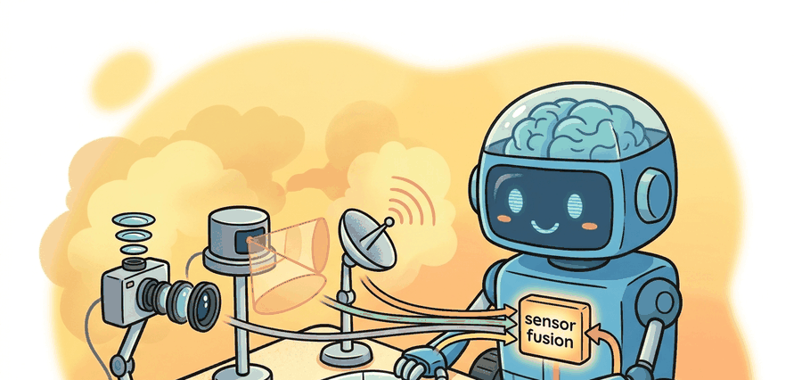

An autonomous vehicle sees the world through three sensors that disagree and one fusion algorithm that must not.
On the perception stack

This section assumes familiarity with coordinate frames and rigid-body transforms from section 4.6, and with the basics of 3D point-cloud representation from section 28.2. The calibration concepts introduced here are extended in section 8.5, which covers sensor synchronization and state estimation in depth. The fused detections produced by this pipeline feed directly into the tracking and prediction methods developed in section 48.3.
At highway speed in a rainstorm, a camera goes partially blind, a LiDAR point cloud turns to noise, and only the radar still locks onto the truck fifty meters ahead. No single sensor is enough, and the cost of that inadequacy is measured in lives. Sensor fusion is therefore not an optimisation trick; it is the foundational design constraint of every deployed autonomous vehicle today. Here you will calibrate a camera-LiDAR rig to a shared coordinate frame, build a late-fusion pipeline that combines sparse geometry with dense color, and evaluate the result against a 3D benchmark, gaining hands-on command of the perception layer that every downstream planner depends on.
This section develops the perception stack as a concrete contract: ingest synchronized and calibrated sensor streams, produce 3D objects with class, pose, extent, and velocity, and quantify the result against a labeled benchmark. The recurring discipline is calibration. Fusion is only meaningful when every sensor's measurement can be expressed in a shared coordinate frame, and the worked example projects a LiDAR point into the camera image to make that frame transformation explicit. A single degree of extrinsic misalignment, easy to miss on a checkerboard target, silently moves every LiDAR return by nearly a meter at 50 m range; this is what engineers call the calibration debt problem, and it explains why a freshly trained detector can fail without warning after a sensor swap.
Theory
Sensor modalities
| Modality | Variants and parameters | Strengths | Weaknesses |
|---|---|---|---|
| Camera | monocular, stereo (depth from disparity), fisheye (wide FOV, strong distortion) | dense texture, color, sign and lane reading | no direct range (mono), poor in low light, glare |
| LiDAR | 64 to 128 beams, 10 to 20 Hz, mechanical or solid-state | accurate 3D geometry, range to ~200 m | sparse at distance, degraded by rain, snow, dust |
| Radar | 77 GHz automotive, FMCW, direct Doppler | direct radial velocity, robust to weather and lighting | coarse angular resolution, clutter, multipath |
Fusion levels
Fusion is categorized by where in the pipeline modalities are combined.
- Sensor-level (low-level) fusion combines raw measurements, for example painting LiDAR points with camera pixels before detection. Maximum information, maximum calibration and synchronization sensitivity.
- Early (feature-level) fusion combines learned features from each modality inside a single network, as in bird's-eye-view fusion.
- Late (object-level) fusion runs an independent detector per modality and merges the resulting object lists. Robust and modular, but discards cross-modal cues that only exist before detection.
3D object detection
Given fused inputs, a detector outputs oriented 3D boxes. Representative families: PointPillars voxelizes the LiDAR point cloud into vertical pillars and runs a 2D backbone for speed; CenterPoint detects object centers in a bird's-eye-view heatmap and regresses box and velocity; BEVFormer lifts multi-camera features into a shared bird's-eye-view grid using spatial and temporal attention, enabling camera-only or camera-LiDAR detection in one frame.
Every fusion method assumes the extrinsic transform between sensors and the camera intrinsics are known and stable. A 1-degree extrinsic error at 50 m is roughly a 0.9 m lateral error: enough to place a LiDAR return for a pedestrian onto the empty road beside them. Most "fusion failures" are calibration or time-synchronization failures in disguise.
To express a LiDAR point in the camera image you chain three transforms. The extrinsic matrix $T_{\text{cam}\leftarrow\text{lidar}}$ (a 4x4 rotation plus translation) moves the point from the LiDAR frame to the camera frame; the intrinsic matrix $K$ (focal lengths $f_x, f_y$ and principal point $c_x, c_y$) projects the 3D camera-frame point to pixel coordinates; finally you divide by depth (the perspective division). Points behind the camera ($z \le 0$) must be discarded before division.
Algorithm: LiDAR-to-Camera Projection with Validity Check
Input: LiDAR point $\mathbf{p}_L = (x, y, z)^\top$ in the LiDAR frame; extrinsic rotation $R \in \mathbb{R}^{3 \times 3}$ and translation $\mathbf{t} \in \mathbb{R}^3$ mapping LiDAR to camera frame; camera intrinsic matrix $K$ with focal lengths $(f_x, f_y)$ and principal point $(c_x, c_y)$; distortion tolerance $\theta_{\max}$.
Output: Pixel coordinate $(u, v)$ of the projected point, or $\varnothing$ if the point is behind or outside the image plane.
- Transform the point into the camera frame: $\mathbf{p}_C = R\,\mathbf{p}_L + \mathbf{t}$, yielding $(X_c, Y_c, Z_c)^\top$.
- Discard invalid geometry: if $Z_c \le 0$, return $\varnothing$ (point is at or behind the optical center).
- Apply the perspective projection: compute the normalized image coordinates $\tilde{u} = X_c / Z_c$ and $\tilde{v} = Y_c / Z_c$.
- Check the angular incidence: if $\alpha = \arctan\!\bigl(\sqrt{\tilde{u}^2 + \tilde{v}^2}\bigr) > \theta_{\max}$, flag the point as outside the valid field of view.
- Apply the intrinsic matrix via the homogeneous product $[u', v', w']^\top = K\,\mathbf{p}_C$.
- Perform the perspective division: $u = u'/w'$, $v = v'/w'$.
- Clamp to image bounds: if $u \notin [0, W)$ or $v \notin [0, H)$, return $\varnothing$.
- Optionally, attach the depth value $d = Z_c$ and the gradient $\nabla_{\mathbf{p}_L} (u, v)$ for downstream uncertainty propagation.
- Return $(u, v, d)$ as the valid projection.
Worked Example
The example projects a LiDAR point $(x, y, z)$ into a camera image using the calibration matrices, the single most common operation in any fusion pipeline.
import numpy as np
# Camera intrinsics K (3x3): focal lengths and principal point in pixels.
K = np.array([[1200.0, 0.0, 960.0],
[ 0.0, 1200.0, 540.0],
[ 0.0, 0.0, 1.0]])
# Extrinsic: rotation R (3x3) and translation t (3,) mapping LiDAR -> camera frame.
# Here the camera looks forward; LiDAR is mounted 0.3 m above and 1.6 m behind it.
R = np.array([[ 0.0, -1.0, 0.0], # LiDAR x (forward) -> camera z
[ 0.0, 0.0, -1.0], # LiDAR z (up) -> -camera y
[ 1.0, 0.0, 0.0]]) # LiDAR y (left) -> camera x
t = np.array([0.0, 0.3, -1.6])
def project_lidar_to_image(point_lidar, R, t, K):
"""Project a LiDAR point (x, y, z) to pixel (u, v); return None if behind camera."""
p_cam = R @ np.asarray(point_lidar, dtype=float) + t # camera-frame 3D point
if p_cam[2] <= 1e-6: # behind the image plane
return None
uvw = K @ p_cam # apply intrinsics
u, v = uvw[0] / uvw[2], uvw[1] / uvw[2] # perspective division
return float(u), float(v)
# A LiDAR return 20 m ahead, 1 m to the left, at ground-ish height.
pt = (20.0, 1.0, -0.5)
pix = project_lidar_to_image(pt, R, t, K)
print("pixel (u, v):", None if pix is None else (round(pix[0], 1), round(pix[1], 1)))
Expected output: a pixel coordinate near the image center-left, around (u, v) = (894.8, 592.2). Swap in a point with LiDAR-forward distance set negative and the function returns None, the guard that prevents projecting points behind the camera onto the image.
The pinhole projection above (K @ p_cam) is correct only for rectilinear lenses. For the fisheye cameras that appear in the sensor table, use cv2.fisheye.projectPoints with the four-parameter distortion vector D stored in your calibration file; applying the pinhole formula to a fisheye image silently misplaces LiDAR returns near the frame edges by tens of pixels, which is undetectable on center objects but produces meter-scale lateral errors for pedestrians in the peripheral field of view. Check your calibration file for a non-zero D[3] (the tangential term) as a quick test of whether the pinhole model is safe to use.
In practice use the dataset SDKs that ship calibrated transforms: the nuScenes devkit and the Waymo Open Dataset tools expose per-sensor intrinsics and extrinsics and handle ego-motion compensation. For detectors, MMDetection3D and OpenPCDet provide reference PointPillars, CenterPoint, and BEVFormer implementations. Keep the same projection convention (frame order, distortion model) across your pipeline.
Practical Recipe
- Establish a shared coordinate frame and verify extrinsics by projecting LiDAR onto camera images for known objects.
- Time-synchronize streams (hardware trigger or timestamp interpolation); record the residual time skew.
- Choose a fusion level deliberately: late fusion to start (modular, debuggable), early or sensor-level once calibration is trusted.
- Run a reference 3D detector and report mAP and velocity error against the benchmark.
- Save one artifact: calibration, sync residuals, detector config, and overlaid projection images for visual audit.
A small clock skew between camera and LiDAR makes a fast crossing pedestrian appear smeared or doubled after fusion. The detector confidence drops, the tracker stutters, and the planner over-brakes. Always log the per-frame time skew; it is the first thing to check when fused detections degrade only for fast objects.
A team adding radar to a camera-LiDAR stack should fuse radar Doppler at the object level first: associate radar tracks to detected boxes and use radial velocity to disambiguate stopped versus creeping vehicles. This recovers velocity in heavy rain where LiDAR returns thin out, without rebuilding the detector.
Camera knows what, LiDAR knows where, radar knows how fast. Fusion's job is to keep all three answers about the same object.
Late fusion is the right starting point when sensors are added incrementally or when the two modalities have independent failure modes you want to isolate: if the camera detector fails in a tunnel, the radar tracker still runs and the failure is visible in logs. Sensor-level fusion becomes worth the added calibration risk once the per-modality detectors are saturating on easy cases and the remaining errors (distant pedestrians, partial occlusions) require joint evidence that only exists before any detection threshold is applied. Early feature-level fusion, as in BEVFormer, is appropriate when the task demands temporal reasoning across frames, because the network can learn to integrate motion cues across the two streams in a way that a late-fusion rule cannot. A practical decision rule: if your per-modality mAP is below 60, fix the individual detectors first; fusion cannot recover fundamentally bad sensor signal.
BEVFormer v2 and UniAD extend bird's-eye-view fusion into end-to-end stacks where a single transformer ingests raw camera and LiDAR tokens and outputs trajectory waypoints, collapsing the detection-prediction-planning boundary into one latent space. The open robustness problem is sensor dropout: when one camera fails mid-route at highway speed, the BEV grid loses roughly 60 degrees of coverage, and the occupancy voxels in that arc freeze at their last valid state. Tesla's occupancy network addresses this with a per-voxel confidence decay tied to ego-speed so that a stale 80 km/h estimate clears in under 200 ms, but the correct decay schedule for a stationary occluder versus a fast-moving vehicle remains unsolved. Waymo's 2023 ablations showed a 12 percent mAP drop on the validation split when a single 64-beam LiDAR is masked for three consecutive frames, a regime that occurs in real deployments during sensor brownouts and tunnel transitions.
Can you state, for a single LiDAR point, the two matrices and the one division needed to place it in the image, and the condition under which the projection is invalid? If not, revisit the mechanism box before fusing modalities.
| Tool or Library | Role in the Topic | Builder Advice |
|---|---|---|
| nuScenes devkit, Waymo Open Dataset tools | Calibrated multi-sensor data and transforms | Use their extrinsics rather than re-deriving frames by hand. |
| MMDetection3D, OpenPCDet | Reference 3D detectors (PointPillars, CenterPoint, BEVFormer) | Reproduce a published number before customizing. |
| Projection overlay script | Visual calibration audit | Overlay LiDAR on camera every release to catch extrinsic drift. |
Section 48.1 frames perception inside the full loop, 48.3 consumes these detections for tracking and prediction, and 48.5 explores learned representations that fuse and predict jointly.
Perturb the extrinsic rotation in the worked example by 1 degree and re-project a point at 50 m. Measure the pixel shift, convert it back to a ground-plane lateral error, and label whether it would move a pedestrian off the sidewalk.
Section References
Lang et al., "PointPillars: Fast Encoders for Object Detection from Point Clouds," CVPR 2019. Yin et al., "Center-based 3D Object Detection and Tracking" (CenterPoint), CVPR 2021. Li et al., "BEVFormer: Learning Bird's-Eye-View Representation from Multi-Camera Images," ECCV 2022.
These define the detector families and the bird's-eye-view fusion paradigm referenced above.
Three modalities disagree by design; fusion turns that disagreement into a more complete and robust scene, but only when calibration and time synchronization are correct. Master the LiDAR-to-camera projection first, because every fusion method depends on it.
Extend the projection function to handle a batch of LiDAR points and to color each surviving pixel by depth. Then design a same-panel experiment comparing late fusion (merge two detector outputs) against the painted-point sensor-level approach on identical frames, measuring mAP and the false-negative rate for pedestrians.